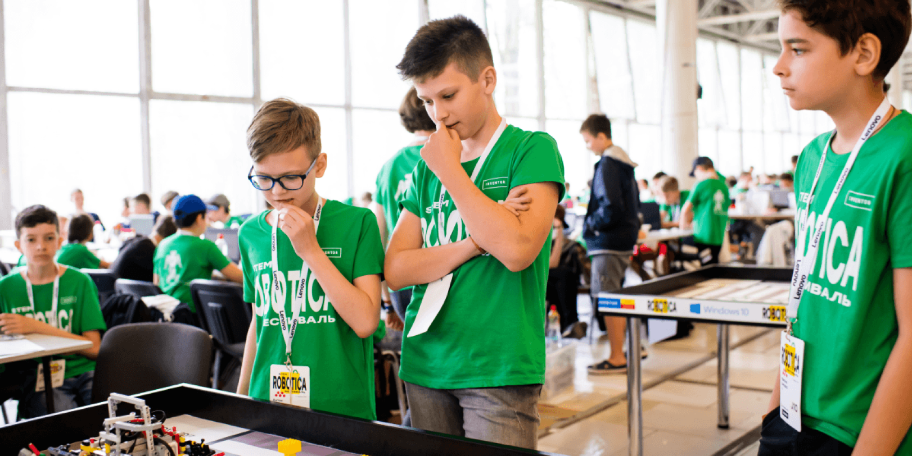
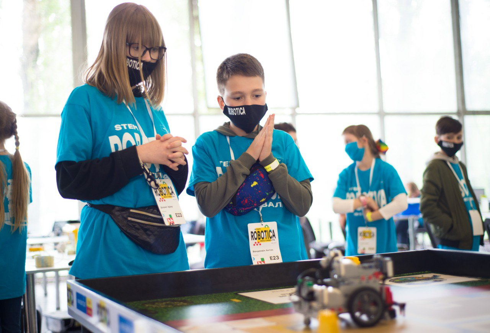
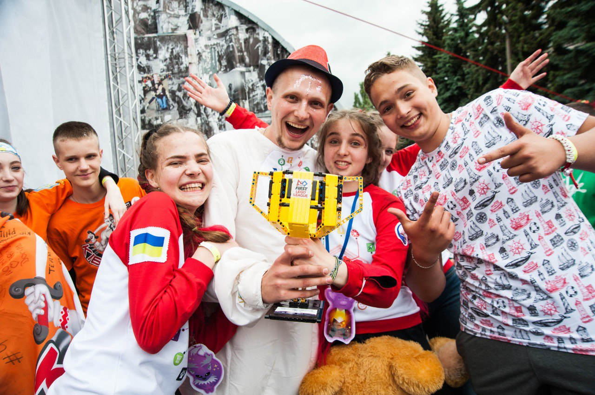
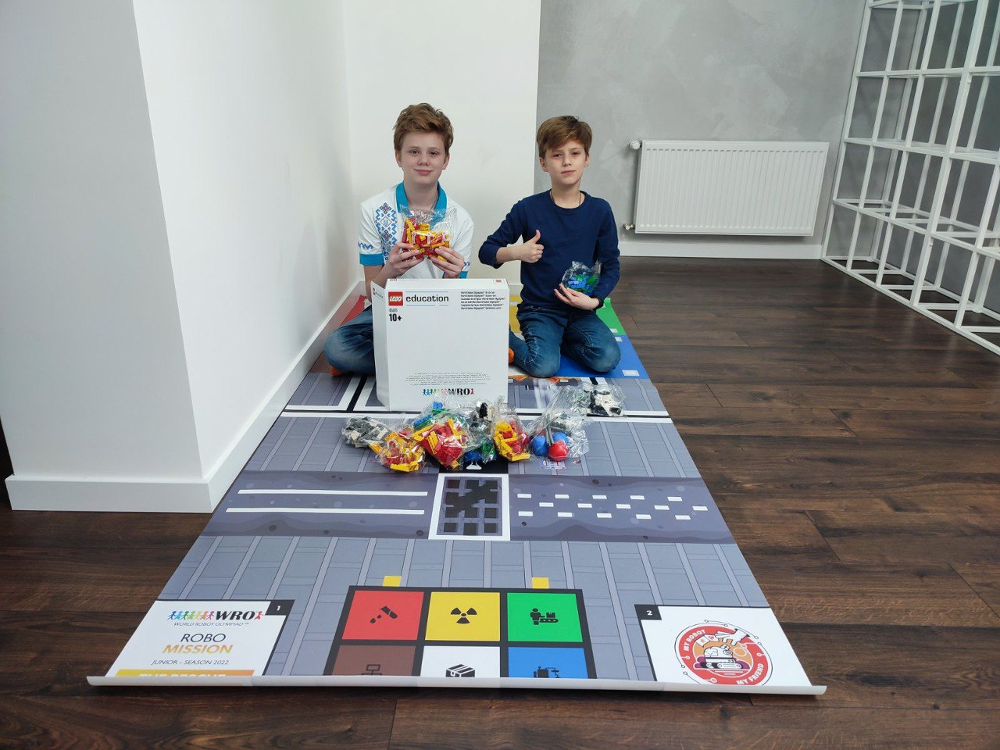

Підтримати STEM-проекти:

Фестиваль Robotica
STEM-освіта стала для українських дітей можливістю цікаво навчатися та освоювати важливі навички для свого майбутнього. Діти готувалися презентувати власні інноваційні ідеї з робототехніки на Всеукраїнському STEM-фестивалі ROBOTICA, аби потім захищати честь України на світовому рівні.
Проте жорстокий удар росії по Україні знищив реальність дітей і поставив під загрозу їхнє майбутнє. Сім’ї покинути свої домівки, процес офлайн-навчання зупинився, команди розділені і всі змушені шукати прихистку і безпеки в інших містах та державах.
Ми продовжуємо власними зусиллями підтримувати українські команди і радіємо, що діти із ще більшим бажанням хочуть навчатися, щоб будувати мирне і успішне майбутнє України. Але важливі зміни потребують фінансування. Ваша підтримка – це шанс для українських дітей продовжити втілювати свої інноваційні ідеї та мрії.
Ваша пожертва допоможе забезпечити:
- Онлайн відео та інструкції на теми STEM та WRO для дітей та команд;
- Персоналізована підтримка команд та/або регіонів для їх участі у WRO;
- Зробити національну WRO доступнішою та сильнішою у 2022 році;
- Надання можливості більшій кількості команд брати участь у міжнародних турнірах;
- Професійна підтримка вчителів та волонтерів;
- Інші потреби, які виникнуть у ці божевільні часи.
Будь-яка велика справа потребує підтримки! Давайте разом допоможемо українським дітям втілювати свої STEM-ідеї!
Проте жорстокий удар росії по Україні знищив реальність дітей і поставив під загрозу їхнє майбутнє. Сім’ї покинути свої домівки, процес офлайн-навчання зупинився, команди розділені і всі змушені шукати прихистку і безпеки в інших містах та державах.
Ми продовжуємо власними зусиллями підтримувати українські команди і радіємо, що діти із ще більшим бажанням хочуть навчатися, щоб будувати мирне і успішне майбутнє України. Але важливі зміни потребують фінансування. Ваша підтримка – це шанс для українських дітей продовжити втілювати свої інноваційні ідеї та мрії.
Ваша пожертва допоможе забезпечити:
- Онлайн відео та інструкції на теми STEM та WRO для дітей та команд;
- Персоналізована підтримка команд та/або регіонів для їх участі у WRO;
- Зробити національну WRO доступнішою та сильнішою у 2022 році;
- Надання можливості більшій кількості команд брати участь у міжнародних турнірах;
- Професійна підтримка вчителів та волонтерів;
- Інші потреби, які виникнуть у ці божевільні часи.
Будь-яка велика справа потребує підтримки! Давайте разом допоможемо українським дітям втілювати свої STEM-ідеї!

FIRST LEGO League
Тисячі українських дітей разом зі всім світом навчалися STEM-освіті та брали участь у програмах FIRST LEGO League. Вони мріяли змінювати світ та втілювати свої найкрутіші ідеї.
Проте жорстокий удар росії по Україні знищив їхню реальність і поставив під загрозу їхнє майбутнє. Українські діти покинули свої домівки і були змушені шукати прихистку в інших містах та державах. Команди розділилися, вони не можуть готуватися до турнірів, щоб продемонструвати свої напрацювання з інноваційних проектів і робототехніки.
Українські діти не хочуть миритися з цією ситуацією і з ще більшим завзяттям хочуть вчитися, щоб будувати новий сильний світ, де не буде агресії та війн.
Ми продовжуємо власними зусиллями їх підтримувати, але важливі зміни потребують фінансування. Кожні пожертвувані кошти – це шанс для українських дітей продовжити втілювати свої інноваційні ідеї та мрії.
Підтримайте комфортною для вас сумою розвиток дитячих інноваційних STEM-проектів в Україні.
Ваша пожертва допоможе:
• забезпечити функціонування турнірів FIRST Lego League
• здійснювати STEM-навчання дітей
• підтримувати волонтерів
• відбудувати STEM-спільноту в регіонах, які зазнали найбільших ушкоджень
• підтримати вчителів та тренерів, які формують майбутнє нашої країни
• впроваджувати сучасні освітні підходи в навчальних закладах усіх областей України
Давайте допоможемо дітям не зупинятися! Ми сильніші, коли працюємо разом!
Проте жорстокий удар росії по Україні знищив їхню реальність і поставив під загрозу їхнє майбутнє. Українські діти покинули свої домівки і були змушені шукати прихистку в інших містах та державах. Команди розділилися, вони не можуть готуватися до турнірів, щоб продемонструвати свої напрацювання з інноваційних проектів і робототехніки.
Українські діти не хочуть миритися з цією ситуацією і з ще більшим завзяттям хочуть вчитися, щоб будувати новий сильний світ, де не буде агресії та війн.
Ми продовжуємо власними зусиллями їх підтримувати, але важливі зміни потребують фінансування. Кожні пожертвувані кошти – це шанс для українських дітей продовжити втілювати свої інноваційні ідеї та мрії.
Підтримайте комфортною для вас сумою розвиток дитячих інноваційних STEM-проектів в Україні.
Ваша пожертва допоможе:
• забезпечити функціонування турнірів FIRST Lego League
• здійснювати STEM-навчання дітей
• підтримувати волонтерів
• відбудувати STEM-спільноту в регіонах, які зазнали найбільших ушкоджень
• підтримати вчителів та тренерів, які формують майбутнє нашої країни
• впроваджувати сучасні освітні підходи в навчальних закладах усіх областей України
Давайте допоможемо дітям не зупинятися! Ми сильніші, коли працюємо разом!

Допомога команді Робоклуб Вугледар
Ми оголошуємо збір коштів для команди Робоклуб Вугледар, аби вони змогли придбати набори LEGO®
Education SPIKE™ Prime та SPIKE™ Essential.
Давайте допоможемо команді з Вугледару не зупинятися!
Аби вони змогли далі готуватися до змагань, втілювати свої робототехнічні ідеї та мрії необхідно зібрати 26798 грн.
Робоклуб Вугледар – круті! Вони призери міжнародного фіналу WRO 2021, учасники онлайн-змагань у Канаді у 2020, на постійній основі беруть участь у різноманітних робототехнічних змагання, зокрема – національному відборі WRO, Всеукраїнському STEM-фестивалі ROBOTICA тощо.
З першого дня війни місто Вугледар потерпає від обстрілів, багато руйнувань і горя. На жаль, приміщення освітнього центру Робоклуб Вугледар зруйновано внаслідок обстрілу, навчальне обладнання втрачено.
Команда співробітників, тренерів та сім'ї учнів освітнього центру зараз активно займаються волонтерською діяльністю, організовуючи доставку гуманітарних вантажів для мешканців міста.
Найближчим часом вони хочуть відновити освітній процес та підготовку до змагань.
Давайте допоможемо дітям! Ми сильніші, коли працюємо разом!
Підтримайте комфортною для вас сумою мрії української робототехнічної команди!
Давайте допоможемо команді з Вугледару не зупинятися!
Аби вони змогли далі готуватися до змагань, втілювати свої робототехнічні ідеї та мрії необхідно зібрати 26798 грн.
Робоклуб Вугледар – круті! Вони призери міжнародного фіналу WRO 2021, учасники онлайн-змагань у Канаді у 2020, на постійній основі беруть участь у різноманітних робототехнічних змагання, зокрема – національному відборі WRO, Всеукраїнському STEM-фестивалі ROBOTICA тощо.
З першого дня війни місто Вугледар потерпає від обстрілів, багато руйнувань і горя. На жаль, приміщення освітнього центру Робоклуб Вугледар зруйновано внаслідок обстрілу, навчальне обладнання втрачено.
Команда співробітників, тренерів та сім'ї учнів освітнього центру зараз активно займаються волонтерською діяльністю, організовуючи доставку гуманітарних вантажів для мешканців міста.
Найближчим часом вони хочуть відновити освітній процес та підготовку до змагань.
Давайте допоможемо дітям! Ми сильніші, коли працюємо разом!
Підтримайте комфортною для вас сумою мрії української робототехнічної команди!